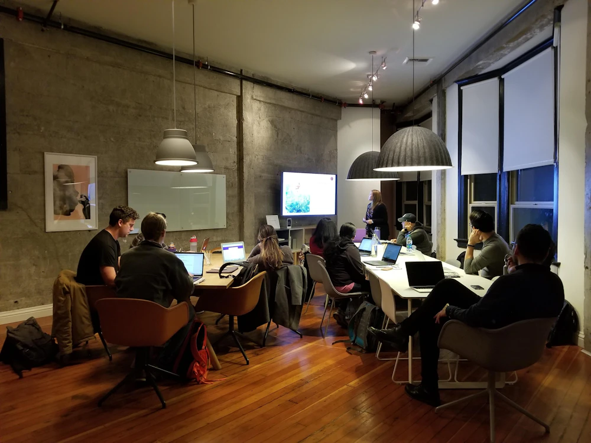

The people behind every team.
Researchers, engineers, founders, operators and investors working at the frontier. They set the problems BQ students work on, mentor the pods, judge Demo Night and meet the strongest teams first.
Membership is by invitation, or by a request the BQ team reads.
What members do
Put your work where it counts.
Members choose how much time to give and where. Most start with one of these.
-
Set a problem
Bring a live problem from your work to a chapter pod. We frame it with you, so you decide what is shared.
-
Mentor a pod
Stay with one student team across a sprint, a few hours at a time.
-
Run a Build Lab
A hands-on session in your field, where students leave with something that works.
-
Lead a session
Take the network deep into a problem you are working on now, at the depth you would use with colleagues.
-
Judge Demo Night
Help choose the teams that go further, and tell them what you really think.
-
Meet teams early
Angels and pre-seed investors see the strongest teams and BQ Fellows first, when both sides want it.

How the network meets
Small rooms, at research depth.
Between sprints, we bring the network together in small, invitation-only technical sessions. A researcher or practitioner takes the room deep into one frontier problem, and the people in it decide who to work with next.
- AI and cloud
- Robotics
- Semiconductors
- Advanced materials
- Space tech
- Energy
Fintech, real estate and food and agri-tech sessions run when someone brings a problem that deserves the room.
Access is earned
How members are chosen.
Most members are invited by someone already in the network. You can also ask, and the BQ team reads every request.
How members join
- An invitation from a member, mentor or speaker
- Or a short request, where we read what you work on
- What you would bring to students and to the network
What we ask of members
- Time you can actually give, however little
- Honest feedback for students
- Introductions only when both sides want them
The network stays small on purpose. People who keep showing up keep being invited.
Join the network.
Tell us what you work on and how you would like to be involved. It takes a few minutes.